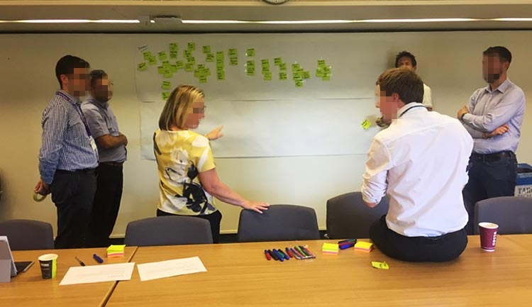
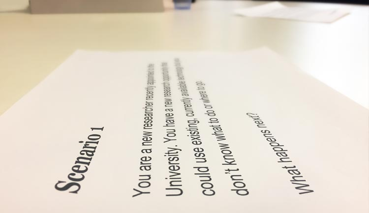
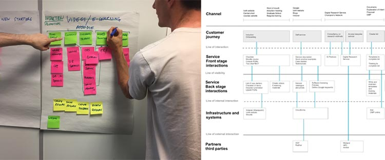

The Digital Research team wanted to improve their services to customers, by understanding each constituent part of their offer and the people processes and support systems/infrastructure behind them.
I designed and led a series of workshops to map out a service blueprint, with a focus on two service areas for the Digital Research team.
The first session included senior stakeholders across research, IT and service management, to work through a series of pre-planned activities. We established a high level objective to refer back to during the session, and worked through scenario based customer journeys.


The part of the service the customer can see and experience was agreed (front stage), and then the underlying technologies 'behind the scenes' that customers don't see were established (back stage). The support processes needed to underpin the service were plotted, and any externals such as third party providers detailed.
The second workshop was a more detailed look at 'next levels down' on the blueprint. Members of operational staff such as service managers, researchers, and digital research specialists were invited to establish the artefacts (props), people, and processes required to meet the customer need set out in the original journeys.

Outputs from each session were aggregated, analysed, and worked up using wireframing software into an interactive service blueprint. A link to the model was shared with each stakeholder for feedback and comments, and presented back to the team.
Positive feedback was recieved on the format and structure of the workshops, with senior stakeholders in particular feeling well consulted througout the process.
Client: University of Nottingham Digital Research Service
Date: June 2018
Tag: user research, service design